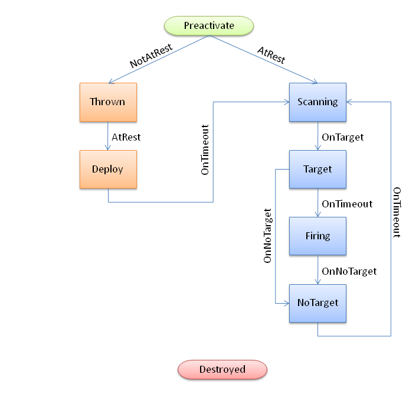

AITurretShapeProvides an AI controlled turret. Uses the AITurretShapeData datablock, which is based on the TurretShapeData datablock for common properties. AITurretShape builds an AI controlled turret. It uses a state machine and properties as defined in AITurretShapeData to decide how to find targets and what to do with them. As with TurretShape (which AITurretShape derives from) the AITurretShape class provides the base on which ShapeBaseImageData weapons may be mounted. OverviewThe AITurretShape functions through the use of a state machine as defined in its AITurretShapeData datablock. It is very similar to how ShapeBaseImageData works. This allows you to customize exactly how the turret behaves while it searches for a target, and what it does once it has a target. But in general, the AI turret goes through a number of stages: ScanningThe AI turret usually starts off by scanning for a suitable target. This is done by checking for targets within a pie wedge shaped volume in front of the turret based on where the scanPoint node is placed. The turret takes cover into account when searching for a target so that it doesn't "cheat". Gained TargetOnce a target is acquired the turret attempts to follow it. Usually at this point the turret activates its weapon. If a target is lost due to it going behind cover, the turret will attempt to follow and reacquire the target using its last known position and velocity. The amount of time allowed for this attempt is defined by AITurretShapeData::trackLostTargetTime. Lost TargetIf the target is lost (either by going behind cover or it is dead) the turret returns to its scanning mode to find another victim. DestroyedIf the AI turret is destroyed then it can go into a special state to show the user that it has been destroyed. As with TurretShape turrets a AITurretShape may respawn after a set amount of time (see TurretShape and TurretShape::doRespawn()). Deployable TurretIn addition to AI turrets being placed within a mission, it is also possible for a player to deploy a turret such as throwing one from their inventory. When a turret has been tossed it will be in a Thrown state and usually in an inactive mode. Once the turret comes to rest on the ground it moves into a Deploy state where it may unfold to get ready. Once ready the turret begins the scanning process. As the AI turret's state machine may be customized for your specific circumstances, the way in which turrets are deployed by a player is up to you. An AI turret could be thrown in a fully working state, ready to take out targets before the turret even hits the ground. Example State MachineHere is an example AITurretShapeData datablock with a defined state machine and the script to support the state machine. This is just one possible example.
And here is the above example state machine's flow: 
Shape File NodesIn addition to the required TurretBase nodes, AITurretShape makes use of additional nodes within the shape file to allow the AI to do its work. The first is the 'scanPoint' node. This is used by the AI to project a pie wedge shaped scanning volume in which to detect possible targets. The scanPoint node is at the apex of the scanning wedge. If the scanPoint node is not present within the shape file then the turret's world transform is used. The second is the 'aimPoint' node. Once the AI turret has obtained a target the aimPoint is used to point the turret at the target. Specifically, the turret rotates in both pitch and heading such that the aimPoint points at the target. If you're using a weapon that doesn't have its muzzle point on the same plane as its mount point (known as an off-axis weapon) then be sure to place the aimPoint at a z position equivalent to the weapon's muzzle point. This allows for the correct pitch calculation. If the aimPoint is not found on the turret's shape, then the pitch node will be used. Ignore ListAI turrets keep track of an ignore list. This is used by default to stop a player deployed turret from targeting its owner, even when that owner is killed and respawns. But this ignore list could also be used to have the turret ignore team mates, squad members, invisible players, etc. Use AITurretShape::addToIgnoreList() and AITurretShape::removeFromIgnoreList() to manipulate this list. You should also look in scripts/server/turret.cs at AITurretShapeData::onThrow() to see how the ignore list is handled and deployed turrets are kept track of on a per connected client basis. Member Function Documentation
Activate a turret from a deactive state.
Adds object to the turret's ignore list. All objects in this list will be ignored by the turret's targeting.
Deactivate a turret from an active state.
Get the turret's current target.
Get the turret's defined projectile velocity that helps with target leading.
Indicates if the turret has a target.
Recenter the turret's weapon.
Removes object from the turret's ignore list. All objects in this list will be ignored by the turret's targeting.
Resets the turret's target tracking. Only resets the internal target tracking. Does not modify the turret's facing.
Set the firing state of the turret's guns.
Set the firing state of the given gun slot.
Set the turret's current state. Normally the turret's state comes from updating the state machine but this method allows you to override this and jump to the requested state immediately.
Set the turret's projectile velocity to help lead the target. This value normally comes from AITurretShapeData::weaponLeadVelocity but this method allows you to override the datablock value. This can be useful if the turret changes ammunition, uses a different weapon than the default, is damaged, etc.
Begin scanning for a target.
Have the turret track the current target.
Stop scanning for targets.
Stop the turret from tracking the current target. AITurretShapeDataThe following shows all datablock fields for an AITurretShapeData, which is required to create a new AI Turret. Member Data DocumentationMaximum distance to scan. When combined with maxScanHeading and maxScanPitch this forms a 3D scanning wedge used to initially locate a target. Maximum number of degrees to scan left and right.
Maximum number of degrees to scan up and down.
Maximum distance that the weapon will fire upon a target. How often should we perform a full scan when looking for a target. Expressed as the number of ticks between full scans, but no less than 1. Random amount that should be added to the scan tick frequency each scan period. Expressed as the number of ticks to randomly add, but no less than zero.
Direction of the animation to play in this state. True is forward, false is backward.
The first state with this set to true is the state entered by the client when it receives the 'fire' event.
Name of this state. If true, the timeScale of the stateSequence animation will be adjusted such that the sequence plays for stateTimeoutValue seconds.
Indicates the turret should perform a continuous scan looking for targets.
Method to execute on entering this state. is state. AITurretShapeData.
Name of the sequence to play on entry to this state. is state.
Time in seconds to wait before transitioning to stateTransitionOnTimeout. nTimeout.
Name of the state to transition to when the turret goes from deactivated to activated. ctivated.
Name of the state to transition to when the turret is at rest (static). (static).
Name of the state to transition to when the turret goes from activated to deactivated. ctivated.
Name of the state to transition to when the turret loses a target. a target.
Name of the state to transition to when the turret is not at rest (not static). static).
Name of the state to transition to when the turret gains a target. a target.
Name of the state to transition to when we have been in this state for stateTimeoutValue seconds. seconds.
If false, this state ignores stateTimeoutValue and transitions immediately if other transition conditions are met. are met.
How long after the turret has lost the target should it still track it. track it. Expressed in seconds.
Velocity used to lead target. d target. If value <= 0, don't lead target.
|